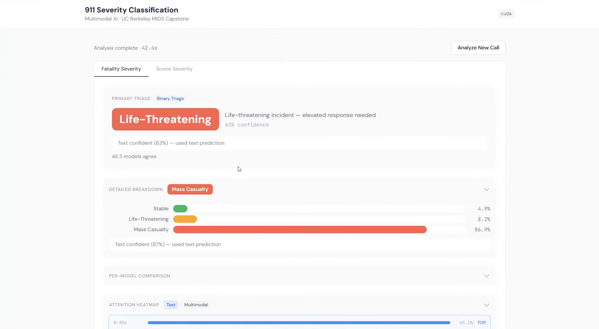
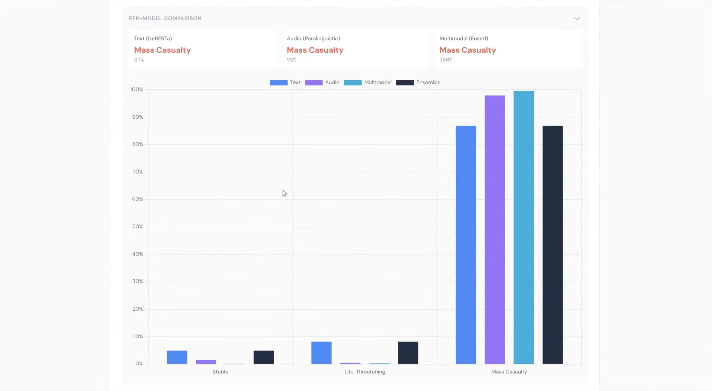
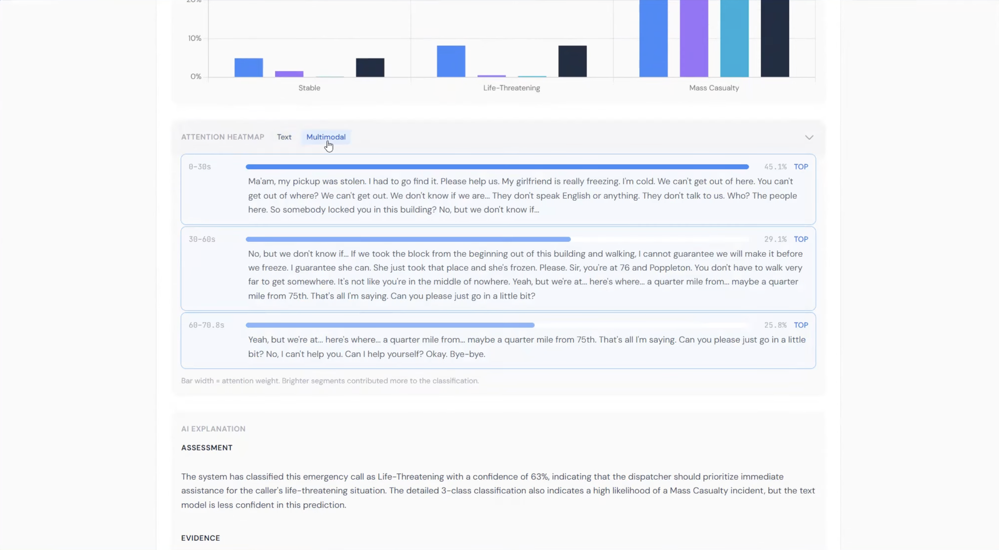

TriageAI: Multimodal AI for Emergency Dispatch
A UC Berkeley MIDS Capstone Project by Mannan Mishra, Ben Robbins, and Anshul Jha
A UC Berkeley MIDS Capstone Project by Mannan Mishra, Ben Robbins, and Anshul Jha

Every year, over 240 million 911 calls are placed across 5,748 Public Safety Answering Points (PSAPs) in the United States. Dispatchers are tasked with making life-or-death decisions in a matter of seconds, often with minimal information, panicked callers, and no automated support.
This high-stress environment leads to critical gaps. Studies show that a significant portion of high-severity events are misclassified during the initial call—for example, strokes mistakenly coded as simple "falls," leading to the dispatch of Basic Life Support (BLS) instead of Advanced Life Support (ALS). Missed treatment windows cost lives. Current Emergency Medical Dispatch (EMD) systems rely on rigid flowcharts or prohibitively expensive, closed-source enterprise software, leaving many suburban and rural dispatch centers without the modern, data-driven tools they need.
TriageAI is an open-source, multimodal machine learning pipeline designed to assess the severity of 911 calls in real-time. By analyzing both what is being said and how it is being said, TriageAI acts as an intelligent "second opinion" to validate and support a dispatcher's judgment.

By combining NLP with voice stress analysis, the model captures the full picture of an emergency—detecting panic and urgency even when the caller's words are unclear.

Dispatchers need to know why an AI made a prediction. Our tool highlights the exact phrases and vocal cues that triggered a high-severity alert.

TriageAI is built specifically for suburban and rural dispatchers who are generally over worked and under resourced. This provides a double check with low barriers to entry.
These dispatcher are generally very low tech, following flow charts to identify severity. This brings them into the age of AI.
Dispatchers generally have very limited information. This can inform them to make better decisions on how to deploy limited resources.

Daniel Aranki and Puya Vahabi